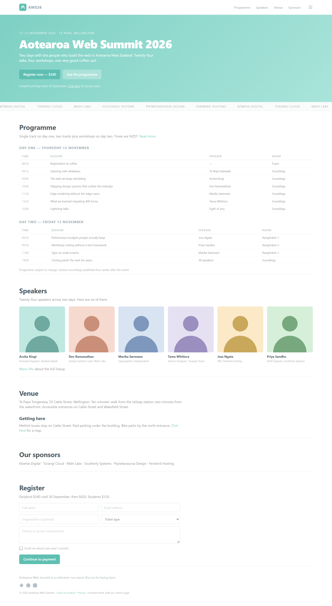
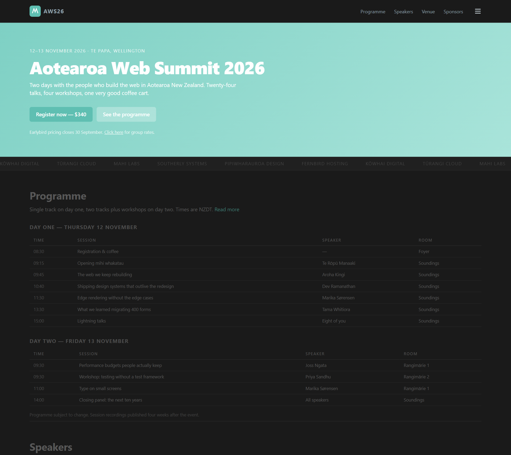
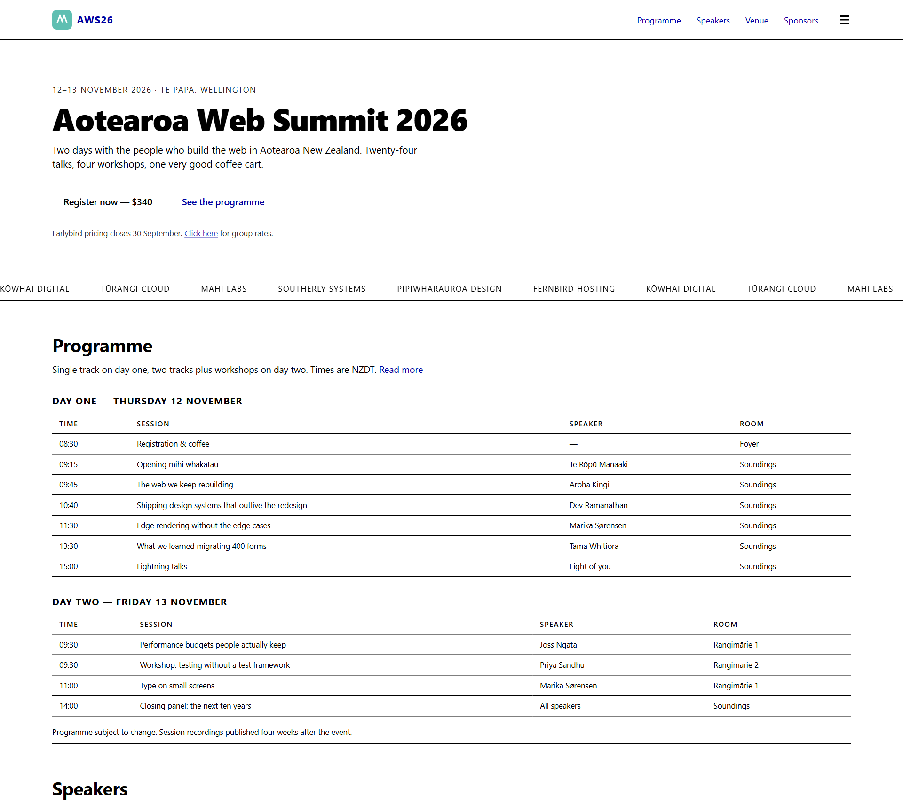
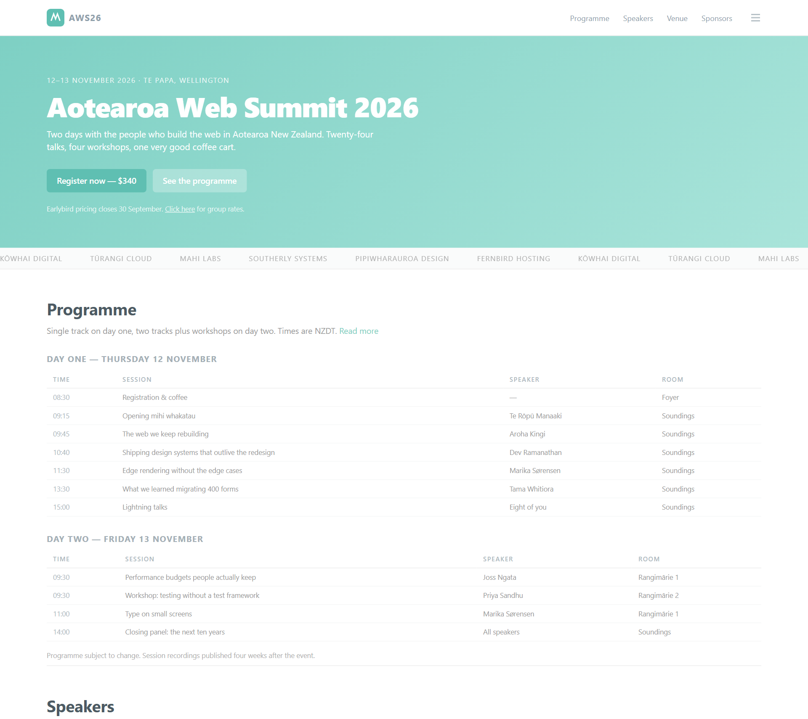
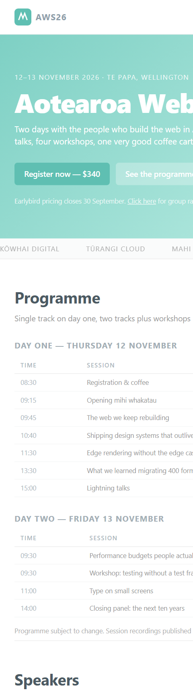
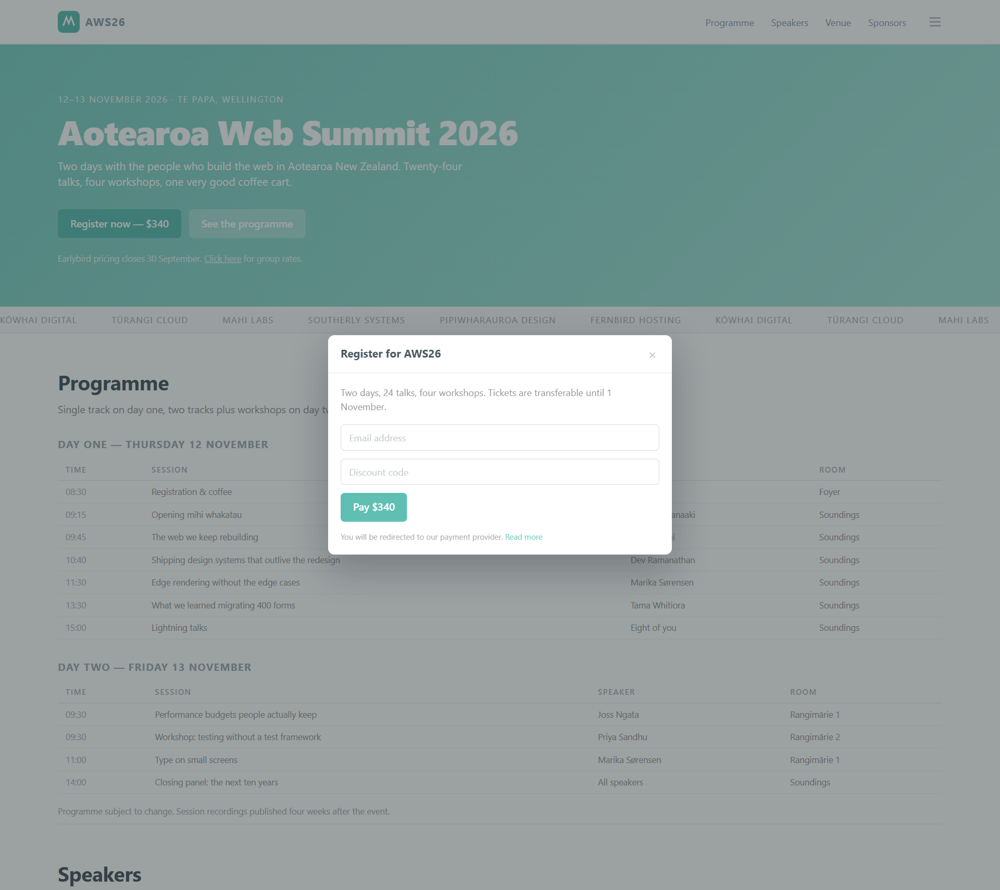
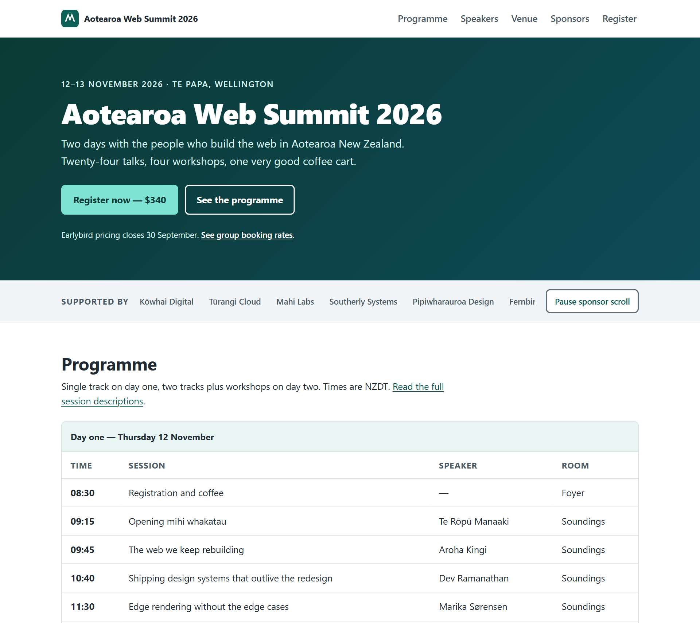

Your coding agent writes the UI.
a11y-loop checks it in a real browser.
ASK YOUR AGENT
INSTALL · ONCE
$
✓ Found 1 skill: a11y-loop
$
$
$
ok Node 24.15.0
ok chromium: headless launch succeeded
info axe-core 4.14.0
An audit can run here.
Works in
Claude CodeCodexCursorCopilotGemini CLI
One skill. One CLI. Any agent.Agent Skills standard · npm package · Claude Code and Codex plugins
PLAN
Build a landing page for Aotearoa Web Summit 2026: a hero with a register button, a sponsor ticker, programme tables for both days, and a register dialog.### Accessibility
- Target: WCAG 2.2 Level AA
- Per-component: dialog → SC 2.1.2, 2.4.3 + APG dialog
- Foreclosing: autoplay ticker → pause button
- Color tokens: a11y-loop contrast --fix, light + dark
- Structure: one h1, landmarks, skip link
- Verification: --interact dialog state; audit in CI
- Manual budget: screen reader + keyboard walk-through
Keep planning
Approve plan
plan gate · a11y-loop plan-check
FINDING: UI plan, accessibility thin or absent
Plan items answered: 0 of 7
✕Target
✕Per-component criteria
✕Foreclosing decisions
✕Color tokens
✕Structure
✕Verification
✕Manual budget
Accessibility is decided while it is still a plan.Claude Code plan gate · a11y-loop plan-check for every other agent and CI

The demo: a page with the mistakes agents commonly ship.demo/before in the repo · 16 seeded failure classes · used below so every number is real
Stop hook · a11y-loop audit gate
this session changed user interface files and has not run a11y-loop audit since the last change:
- demo/before/index.html
Before ending, run the audit on what you changed, including any state you built (an open dialog, an error state) with --interact:
npx a11y-loop audit <url of the running dev server> --out .a11y/run-1.json --quiet
Fix what it reports in the source, re-audit to a new file, and compare.
Before it says “done”, it runs the audit.Claude Code Stop hook · asks once per session
$
demo/before/index.html · Target standard: WCAG 2.2 Level AA
VIOLATIONS (0)







Pass 1/5 · Default
Aa
Aa
→
#8fa0ab
2.69:1 · FAIL AA
2.69:1 · FAIL AA
#697983
4.50:1 · passes AA
4.50:1 · passes AA
hue and chroma kept (OKLCh) · SC 1.4.3 needs 4.5:1
Audited in a real browser.axe-core plus a11y-loop’s own checks: focus, keyboard, dialogs, reflow, motion
Five rendering passes. Plus the states it built.default · dark · forced colors · reduced motion · 320 px reflow · --interact states
It fixes the source, then audits again.contrast fixes come with the color that passes
$ a11y-loop diff --before run-1.json --after run-2.json
Converged: all 159 violations fixed, none introduced
159→0
detectable failures on the repo’s seeded demo page · five passes · axe-core 4.14.0
The loop ends when the diff says so.FIXED · NEW · REMAINING by fingerprint. A new violation fails the run.
No automatically detectable failures · 44 to review · 0 best-practice · 15 manual checks
ATTest with a real screen reader (NVDA or JAWS on Windows, VoiceOver on macOS/iOS).
SC 2.4.3Tab through the page and confirm the focus order is logical, not merely present.
SC 2.1.1Complete the page’s main task using only the keyboard.
SC 1.4.1Confirm colour is never the only way information is conveyed.
SC 2.1.2Confirm each dialog announces itself on open and describes how to dismiss it.
SC 1.4.11Check the contrast of hover and focus states.
… and 9 more, each with the reason automation cannot judge it.
A clean audit is not a conformance claim.
It tells you what it could not check.
Built for agents, end to end.
MCP server
a11y-loop mcp
6 tools: audit, diff, contrast fix, plan check, doctor, manual checklist
Reports for machines
--json · --sarif · --out
Stable finding IDs, so diff can tell fixed from new
Exit codes as a contract
0 clean · 1 findings
2 tool error
2 tool error
An agent branches on them
Never waits on a human
no TTY · no prompts
Every install and audit command runs headless
Runs in CI
uses: ChanMeng666/
a11y-loop@v0.4.1
a11y-loop@v0.4.1
GitHub Action, result in the job summary
An open Agent Skill
npx skills add …
Claude Code · Codex · Cursor · Copilot · Gemini CLI
a11y-loop
Accessible UI, checked in a real browser.
$ npx skills add ChanMeng666/a11y-loop
CLI: npm i -g a11y-loop · a11y-loop install-browser
github.com/ChanMeng666/a11y-loop · open source · MIT
✓PLAN
✓WRITE
✓AUDIT
✓FIX
✓REPORT